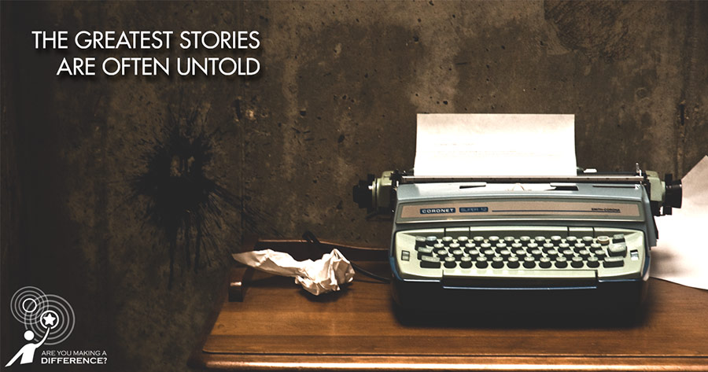
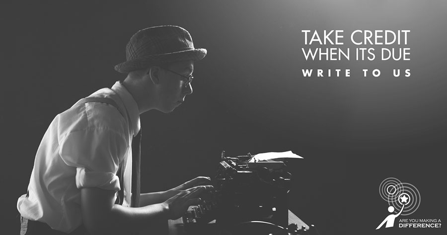
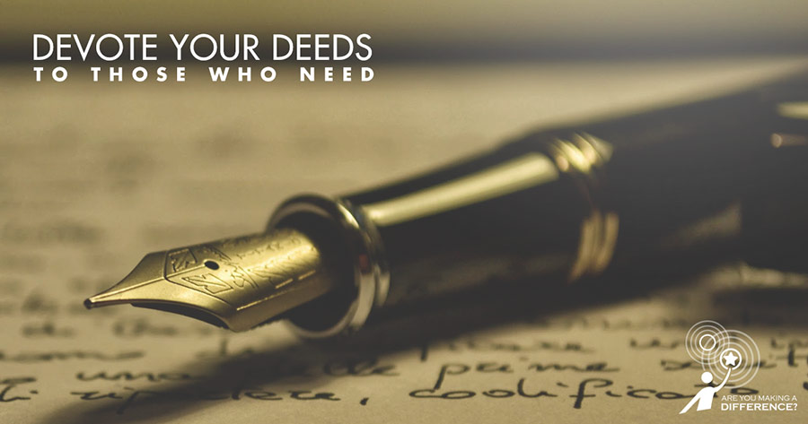

<!DOCTYPE html><html lang="en"><head><title>Rahimafrooz-AYMAD | Case Studies | WebAble Digital | A Digital Marketing Agency In Bangladesh</title><meta name="description" content="An omni-channel campaign by WebAble Digital that generated 60 unique stories, engaged 2 million Bangladeshis and drove 200,000 social media actions."><meta property="og:title" content="Rahimafrooz-AYMAD | Case Studies | WebAble Digital | A Digital Marketing Agency In Bangladesh"><meta property="og:site_name" content="WebAble Digital"><meta property="og:url" content="http://webable.digital/case-studies/social-media/aymad"><meta property="og:description" content="An omni-channel campaign by WebAble Digital that generated 60 unique stories, engaged 2 million Bangladeshis and drove 200,000 social media actions."><meta property="og:image" content="http://webable.digital/images/case-cover/webable_casestudy_rahimafrooz_aymad-1.jpg"><meta charset="utf-8"><link rel="icon" sizes="16x16 32x32 48x48 64x64" href="/images/favicon.ico"><!--link(type="text/css", rel="stylesheet", href="/vendors/bootstrap/css/bootstrap.min.css")--><link type="text/css" rel="stylesheet" href="../../css/main.css"><link rel="stylesheet" href="../../css/sup-styles.css"><link rel="stylesheet" href="http://maxcdn.bootstrapcdn.com/font-awesome/4.3.0/css/font-awesome.min.css"><script src="/js/wow.js"></script><link rel="stylesheet" href="../../css/animate.css"><link rel="stylesheet" href="../../css/nprogress.css"><script src="../../js/nprogress.js"></script><script src="../../js/jquery.smoothState.js"></script><script src="../../js/smoothfunctions.js"> </script><script src="https://maps.googleapis.com/maps/api/js"></script><script src="../../js/typed.js"></script><script src="../../js/script.js"></script><link rel="stylesheet" href="../../css/keyframes.css"><link rel="stylesheet" href="../../css/pageTransitions.css"><meta name="viewport" content="user-scalable=no, width=device-width, initial-scale=1.0, maximum-scale=1.0"><script src="https://cdnjs.cloudflare.com/ajax/libs/modernizr/2.8.3/modernizr.min.js"></script><script>(function(i,s,o,g,r,a,m){i['GoogleAnalyticsObject']=r;i[r]=i[r]||function(){
(i[r].q=i[r].q||[]).push(arguments)},i[r].l=1*new Date();a=s.createElement(o),
m=s.getElementsByTagName(o)[0];a.async=1;a.src=g;m.parentNode.insertBefore(a,m)
})(window,document,'script','//www.google-analytics.com/analytics.js','ga');
ga('create', 'UA-63440796-1', 'auto');
ga('send', 'pageview');
</script></head></html><body><div style="background-color:transparent" class="slideUp"><nav class="top-bar data-topbar row header"><div id="logo" class="left logo"><div class="w-logo"><a href="/"></a></div></div><div class="right"><div id="toggle" class="button_container"><span class="top"></span><span class="middle"></span><span class="bottom"></span></div></div><div id="overlay2" class="overlay2"><div class="left hide"><a href="/"></a></div><nav class="overlay-menu"><ul><li><a href="/work">Work</a></li><li><a href="/about">About</a></li><li><a href="/capabilities">Capabilities</a></li><li><a href="/bable">Bable Blog</a></li><li><a href="/join">Join the team</a></li><li> <a href="/contact">Contact</a></li></ul></nav><div class="social-icons-menu"><ul class="text-align"><li><a href="https://twitter.com/webabledigital"></a><i class="fa fa-twitter"></i></li><li><a href="https://www.linkedin.com/company/webable-bd"></a><i class="fa fa-linkedin"></i></li><li><a href="https://plus.google.com/+WebableBd"> </a><i class="fa fa-google-plus"></i></li><li><a href="https://www.facebook.com/WebAble"></a><i class="fa fa-facebook"></i></li><li><a href="https://instagram.com/webabledigital"></a><i class="fa fa-instagram"></i></li><li><a href="https://www.pinterest.com/WebAbleDigital/"></a><i class="fa fa-pinterest"></i></li></ul></div></div></nav></div><div id="main" class="m-scene"><div class="m-right-panel m-page scene_element scene_element--fadeinup"><div class="mid-body"><div class="row collapse full-width cs-branding-hero"><div class="large-12 columns"><div class="cs-brand-text"><div class="hero-text text-center"><p>Platform to connect with urban youth  </p></div></div></div></div><div class="row full-width"><div class="case1"><div class="wrapper"> <h3>Challenge</h3><br><p>Rahimafrooz, one of the most successful companies in Bangladesh, wanted to leave behind a legacy as more than just the brand that sold batteries and took solar power to the next level. They wanted a campaign that would empower and inspire. Also, despite being one of the most recognized names in the country, they lacked connection with up and coming young generation. Rahimafrooz Solar and Globatt joined forces to sponsor this project. </p></div></div></div><div id="cap" class="row wrapper"><div class="case"><h3>PROCESS</h3><h3>Platforms:</h3><br><p>'Are you making a difference?' campaign was built around a microsite in Rahimafrooz corporate site. It was a crowdsourced storytelling platform where anyone could submit stories with text, videos and images. People from all walks of life could share inspiring stories of change; people, incidents, projects and organizations which are made a difference and inspired someone.</p></div><div class="case"><h3>Media Planning:</h3><br><p>We created multiple ads sets, some targeted to urban youth with activist mindset and others targeted to professionals on Facebook. We did website click ads to drive traffic as well as page promotions and sponsored posts. Campaign drove organic traffic from Facebook, Twitter and Google+ through our community management efforts. We also partnered with Radio Foorti to drive traffic from their social channels.</p></div><div class="case"><h3>Content Strategy:</h3><br><p>Initially we created blog posts (PR) and images to develop awareness about the campaign with a CTA (Call To Action) of submitting stories. Internally, we got people engaged first. We got videos on how various Rahimafrooz companies are making a difference; where top management shared their vision, values and aspirations. </p><p>We reached out to well known difference-makers and celebs from the non-profit and business sectors; got them to share their stories and gain organic traction in their communities. As people submitted their stories, we shared them through social media. We also address some of the key issues happening locally like #NepalEarthquake and women empowerment. </p><p>We posted general contents about Solar and Globatt to build awareness. In the final stage, we opened the platform for vote and invited people to vote for their favorite story. </p></div><div class="case"><h3>RESULTS</h3><br><p>The campaign received great traction from youth and development sector. Over 60 stories were submitted of which 9 were featured in Radio Foorti across 3 shows. The campaign served 15m impressions to 2m engaged Bangladeshis and drove 200K actions (shares, comments and post likes) in 2 months. It also received over 25K organic page likes.  </p><p><a href=""><p>Want to maximize your ROI? Get in touch    </p></a></p></div></div><div class="row collapse full-width team-pics"><div class="large-6 small-12 columns wow slideInLeft"></div><div class="large-6 small-12 columns wow slideInRight"></div></div><div class="row collapse full-width team-pics"><div class="large-6 small-12 columns wow slideInLeft"></div><div class="large-6 small-12 columns wow slideInRight"></div></div><div class="row collapse full-width team-pics"><div class="large-6 small-12 columns wow slideInLeft"></div><div class="large-6 small-12 columns wow slideInRight"></div></div><div class="row collapse full-width team-pics"><div class="large-6 small-12 columns wow slideInLeft"></div><div class="large-6 small-12 columns wow slideInRight"></div></div></div></div></div><div class="footer"><div class="center-div"><div class="list"><ul class="text-align"> <li><a href="/pdf/WebAble_BrandElements.pdf"><h7>BRAND ELEMENTS &nbsp; | &nbsp;</h7></a></li><li><a href="http://webable.digital/bable"> <h7> THE BABLE BLOG   &nbsp; | &nbsp;</h7></a></li><li> <a href="http://webable.digital/work"> <h7>OUR WORK &nbsp; | &nbsp;</h7></a></li><li><a href="http://webable.digital/capabilities"> <h7> OUR SERVICES &nbsp; | &nbsp;</h7></a></li><li> <a href="http://webable.digital/join"> <h7> JOIN THE TEAM </h7></a></li></ul></div><div class="social-icons"><ul class="text-align"><li><a href="https://twitter.com/WebableDigital"></a><i class="fa fa-twitter"></i></li><li><a href="https://www.linkedin.com/company/3544530?trk=tyah&amp;trkInfo=clickedVertical%3Acompany%2Cidx%3A2-1-2%"></a><i class="fa fa-linkedin"></i></li><li><a href="https://plus.google.com/+WebableBd/videos"></a><i class="fa fa-google-plus"></i></li><li><a href="https://www.facebook.com/WebAble?fref=ts"> </a><i class="fa fa-facebook"></i></li><li><a href="https://instagram.com/webabledigital/"></a><i class="fa fa-instagram"></i></li><li><a href="https://www.pinterest.com/WebAbleDigital/"></a><i class="fa fa-pinterest"></i></li></ul></div><div class="text-f"> <h8>©2015 WEBABLE DIGITAL. ALL RIGHTS RESERVED</h8></div></div></div><script src="https://cdnjs.cloudflare.com/ajax/libs/jquery/2.1.4/jquery.min.js"></script><script src="https://cdnjs.cloudflare.com/ajax/libs/fastclick/1.0.6/fastclick.min.js"></script><script src="https://cdnjs.cloudflare.com/ajax/libs/foundation/5.5.2/js/foundation.min.js"></script><script src="https://cdnjs.cloudflare.com/ajax/libs/jquery.nicescroll/3.6.0/jquery.nicescroll.min.js"></script><script src="../../js/foundation/foundation.topbar.js"></script><script src="../../js/sup-topbar.min.js"> </script><script src="../../js/main.js"></script></body>